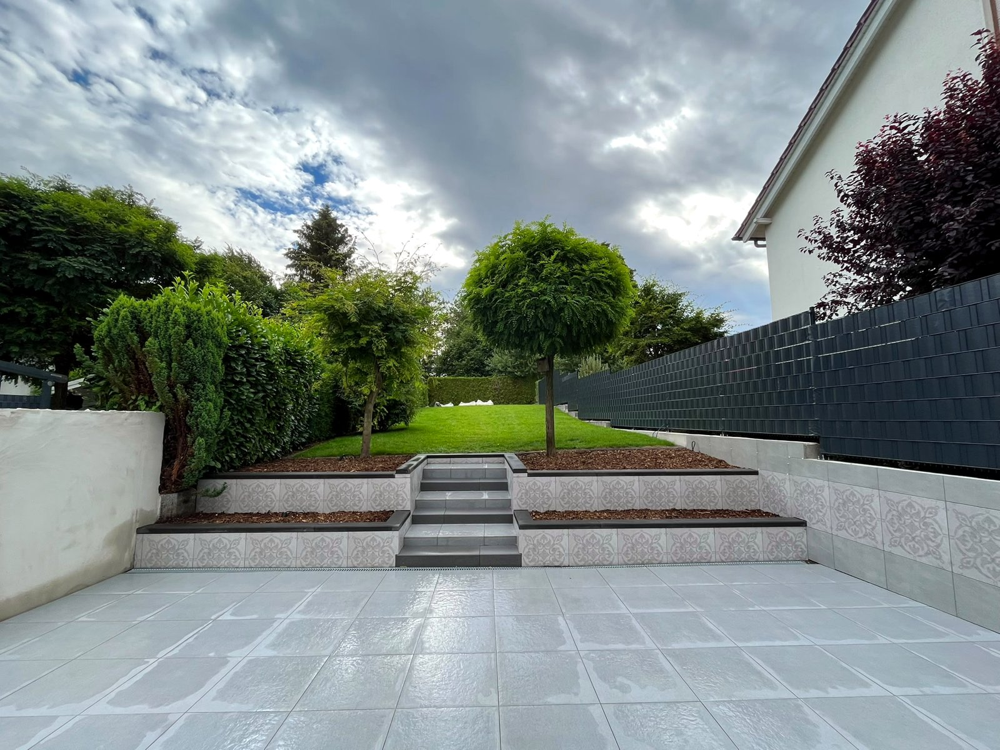
BP Garten & Bau · Gelsenkirchen
Treten Sie ein.
Ein Rundgang durch unsere Arbeit — vom Gartentor bis zum letzten Schliff.
oder einfach scrollen
Rundgang · Kapitel 1 — Der Garten
Draußen: Ihr Garten, nach Maß.
Pflaster, Beete, Rasen, Sichtschutz: Wir formen das Grundstück, bis es zu Ihnen passt.
Stein für Stein.
Unterbau, Blockstufen, klares Muster: So entsteht ein Hauszugang, der Jahrzehnte hält.
Echte Baustelle in Gelsenkirchen: dieselbe Stelle, zwei Momente. Scrollen Sie weiter und sehen Sie zu, wie der Weg fertig wird.

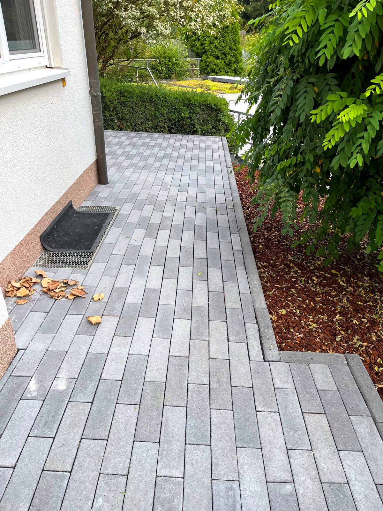
Aus alt wird Ihr Garten.
Terrassierter Garten, komplett erneuert. Alte Terrasse und Stützmauern raus, Ziersteine, Treppe und Beete neu.
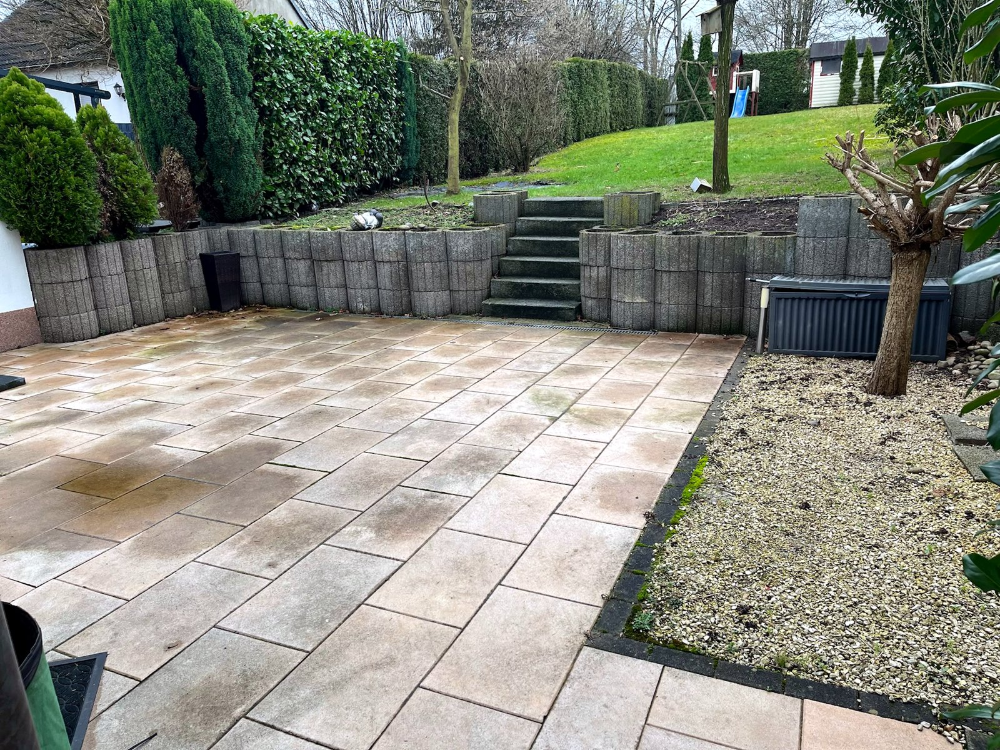
Was wir draußen machen
- Gartengestaltung nach Maß
- Pflasterarbeiten & Wege
- Sichtschutz & Zäune
- Erdbewegungen & Modellierung
- Bepflanzung & Hochbeete
- Grünschnitt & Baumpflege
- Rasen & Rollrasen
- Entsorgung & Räumung
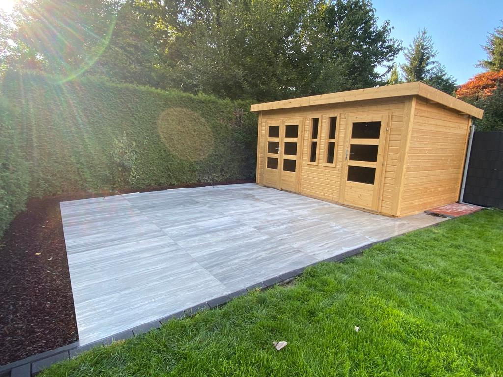

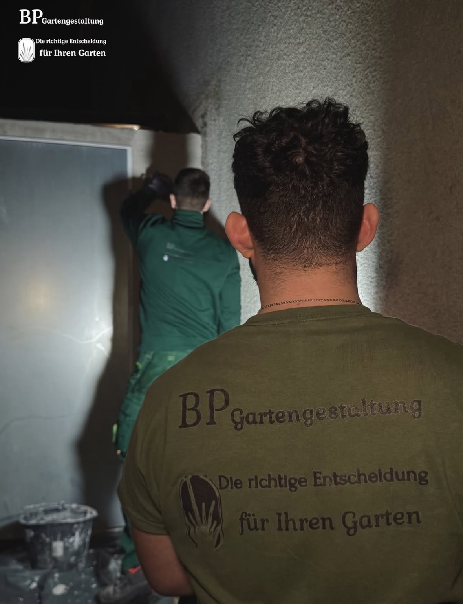
Rundgang · Kapitel 2 — Die Schwelle
Draußen fertig. Und drinnen?
Die zweite Welt von BP: Trockenbau und Innenausbau, dieselbe Sorgfalt, nur unterm Dach.
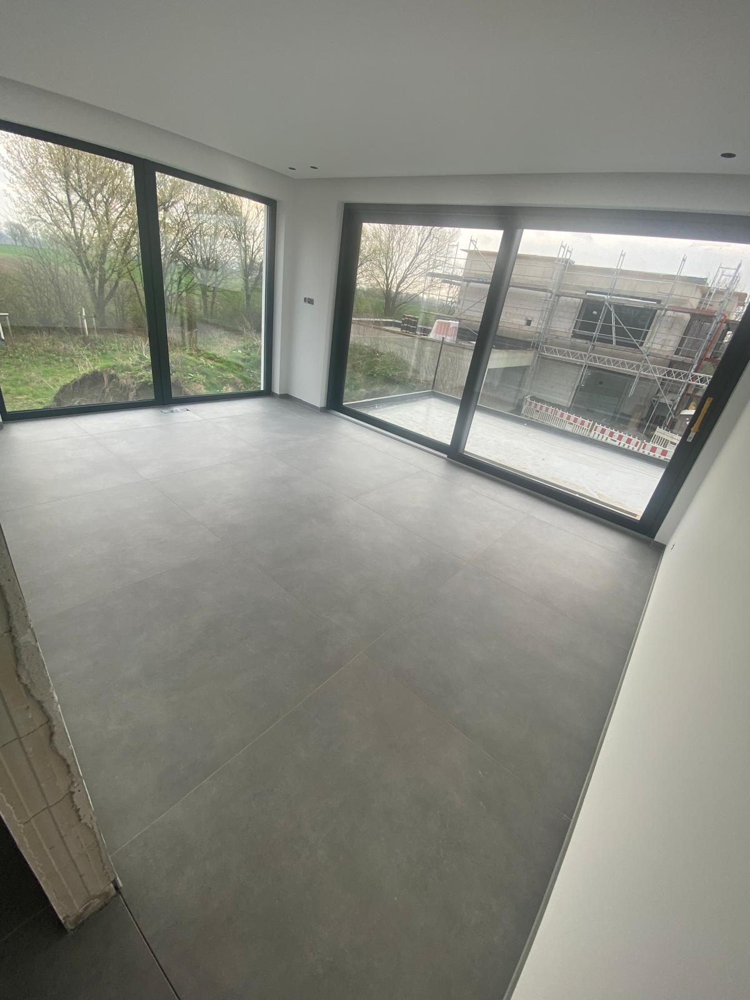
So entsteht eine Wand.
- StänderwerkProfile setzen: lotrecht, fluchtgerecht, fest.
- DämmungSchall- und Wärmeschutz, fugenfrei eingelegt.
- BeplankungGipsplatten verschraubt, Stöße versetzt.
- SpachtelungFugen und Flächen glatt gezogen, bis Qualitätsstufe Q3.
- MalerfertigStreichfertig übergeben. Sauber und termintreu.
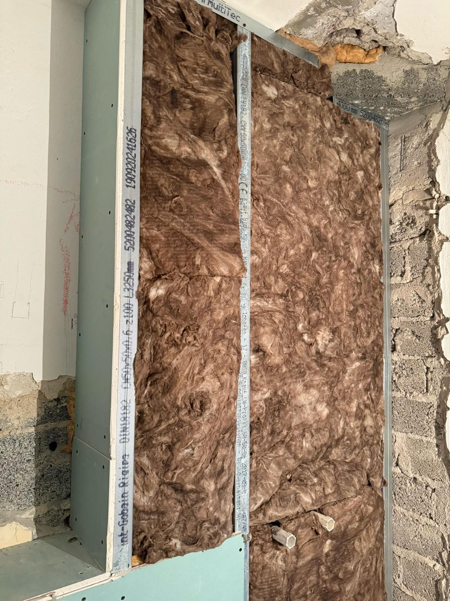
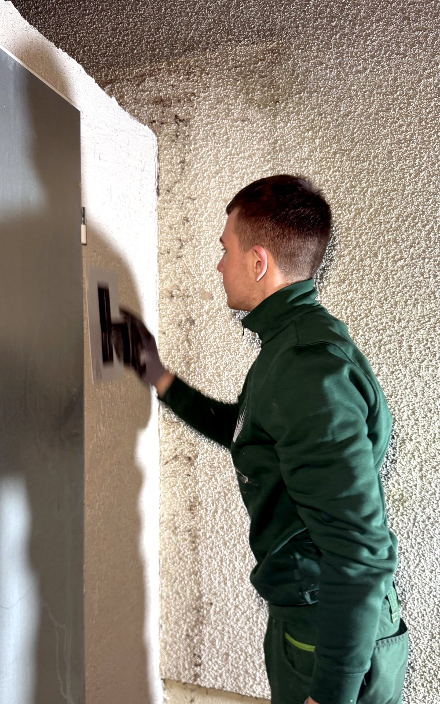
Fertig heißt bei uns: fertig.
Bäder, Küchen, ganze Etagen: Übergeben wird erst, wenn es sauber ist.
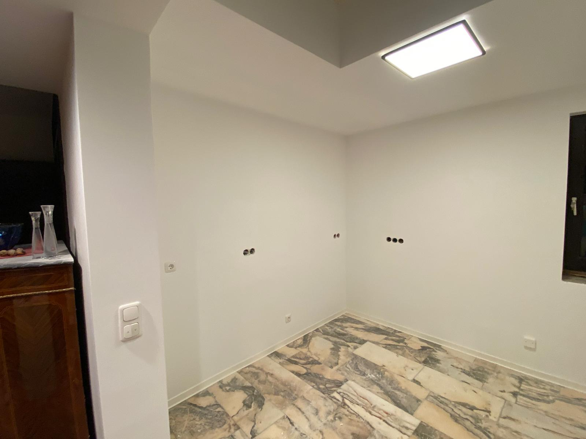
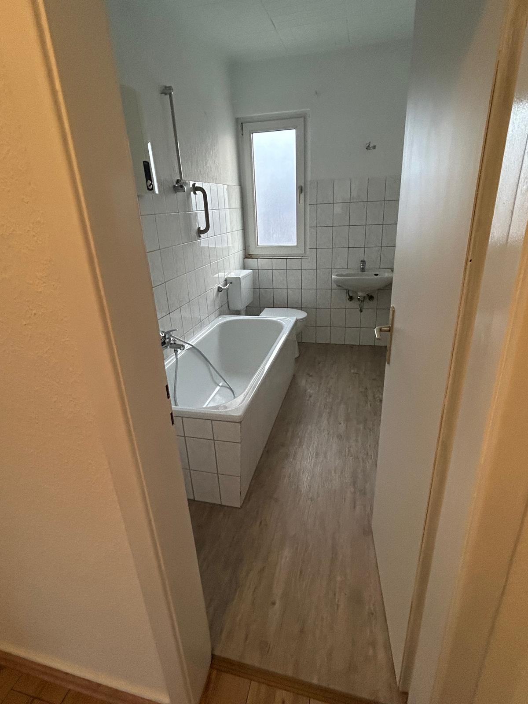
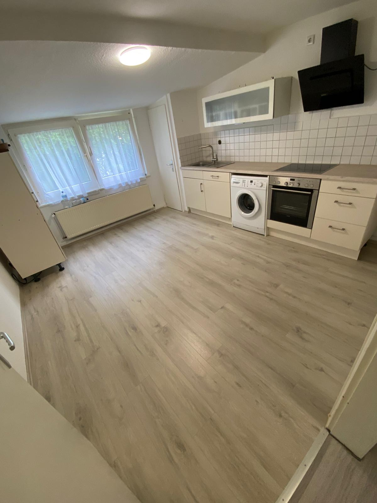
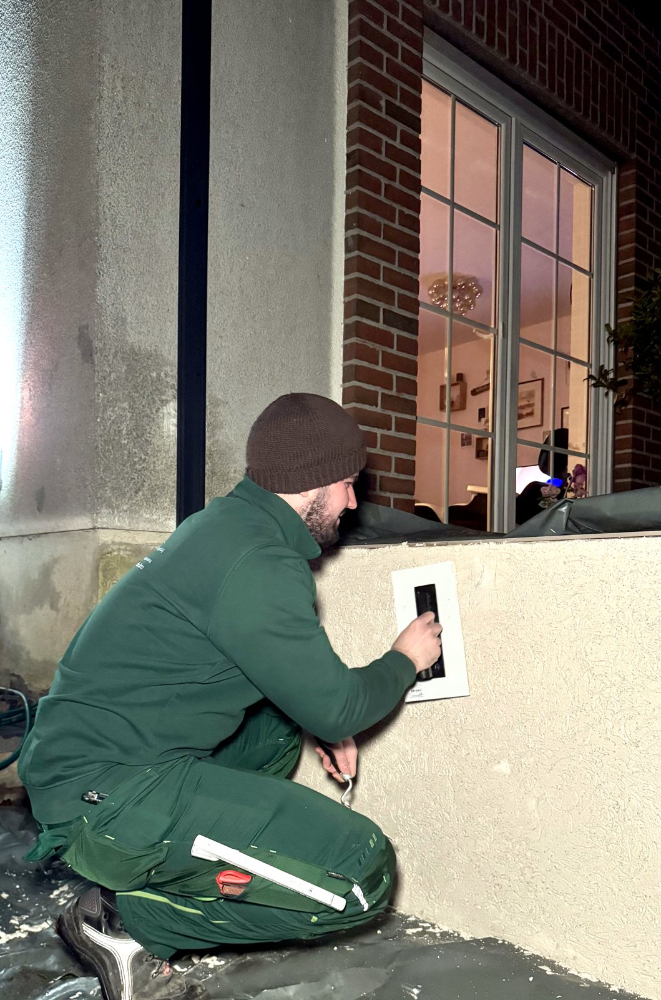
Was wir drinnen machen
- Trockenbau & Ständerwände
- Streichen & CPL-Türen
- Spachtel- & Glättarbeiten
- Innenausbau & Renovierung
- Dämmung & Schallschutz
- Putz & Oberflächen
- Boden & Untergrund
- Komplettsanierung
Aus einer Hand.
Garten & Trockenbau, ein Ansprechpartner, ein Termin. Kostenlose Beratung, klares Angebot, unverbindlich per WhatsApp.
Zur aktuellen Website: bptrockenbaugarten.de